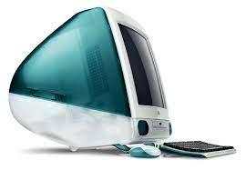
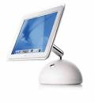

.jpeg)
1976
Desenhado e construído por Steve Wozniak, um dos criadores da então Apple Computer Company,
o Apple I foi o primeiro computador criado pela empresa, que ainda tinha como sócios Steve Jobs e Ronald Wayne.
Já com a ideia de vender o computador.
Steve Jobs teve que se desfazer de seu carro para financiar a criação.
.jpeg)
1977
Dando sequência à invenção de Steve Wozniak, o Apple II contava com um algumas melhorias,
como uma carcaça em plástico que vinha na cor branca. Isso era uma raridade na época, pois os concorrentes usavam sempre a cor bege.
O computador da Apple também vinha com um teclado incorporado, além de uma memória ROM maior e possibilidade de expandir a memória RAM.
Tudo isso na época custava US$ 1.298 (em torno de R$ 3.212 em conversão direta hoje)
.jpeg)
Lisa foi o primeiro modelo desktop a usar uma interface gráfica.
Apresentava um processador de 5 MHz, 1 MB de RAM, 2 unidades de disquete de 5,25 polegadas e um monitor embutido de 12 polegadas,
com resolução de 720 x 360 pixels, além de contar com uma suíte de escritório como Office.
Era uma configuração bem melhor do que a dos concorrentes da época,
mas o preço era absurdamente alto: US$ 9.995 (R$ 24.732, em conversão direta hoje),
o que impossibilitou que o sucesso esperado fosse atingido
.jpeg)
Em janeiro de 1984, há três décadas,
era lançado o revolucionário Macintosh.
Ele é considerado o primeiro computador com uma interface gráfica acessível.
Tinha um processador de 8 MHz, 64 KB de memória ROM e 128 KB de memória RAM.
O Macintosh acompanhava monitor, teclado e mouse por US$ 2.495 (R$ 6.174, em conversão direta hoje).
O comercial durante o Super Bowl de 1984 é uma obra prima da publicidade até os dias de hoje.

O ano de 1998 foi marcado pela retomada da Apple por Steve Jobs (demitido em 1985),
lançando o desktop que popularizou a campanha “Think different”.
O iMac G3 trazia a proposta de ser o computador do novo milênio para todas as pessoas,
fabricado em um gabinete azul translúcido com monitor integrado de 1.024 x 768 pixels e foi
o primeiro modelo do mercado a eliminar o uso de disquete.
O PC acompanhava teclado, mouse, CD-ROM, modem de 56Kbps, processador G3 de 233 MHz e memória RAM de 256 MB.
Custava no lançamento US$ 1,3 mil (R$ 3.217, em conversão direta hoje).
A linha recebeu diversas cores posteriormente,
além da tradicional “bondi-blue”, com campanha publicitária de grande sucesso.
Em 1999, seguindo o design translúcido, a Apple lançou o Mac G3,
um modelo de gabinete para o mercado mais exigente. Também conhecida como Power Macintosh,
a torre tinha processador G3 de 300 a 450 MHz e placa de vídeo ATI Rage 128.
Seu preço começava em US$ 1,6 mil (R$ 3.960, em conversão direta atual).
